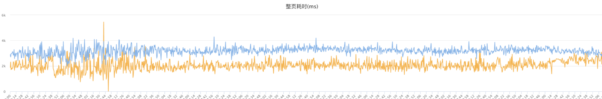
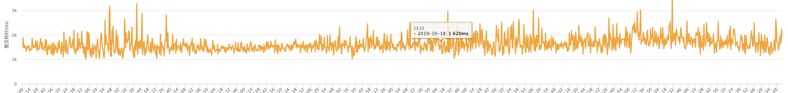
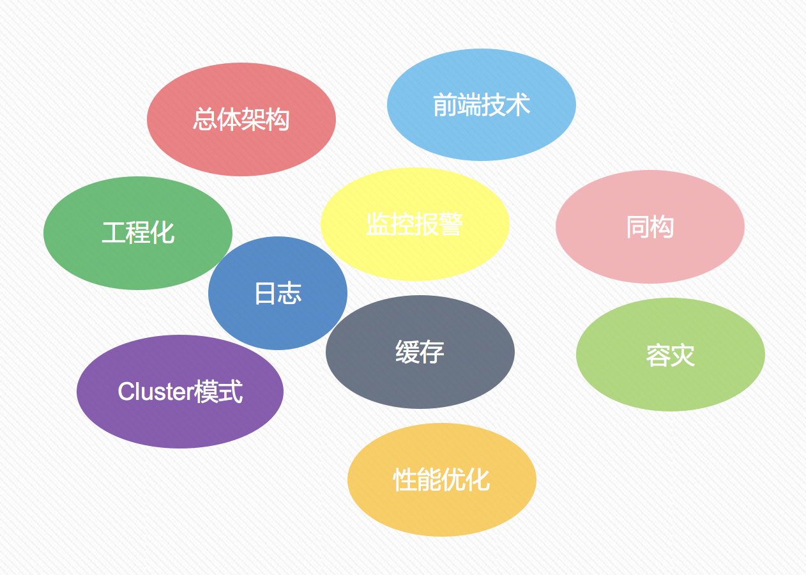
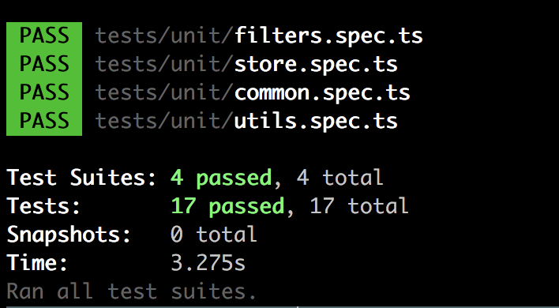
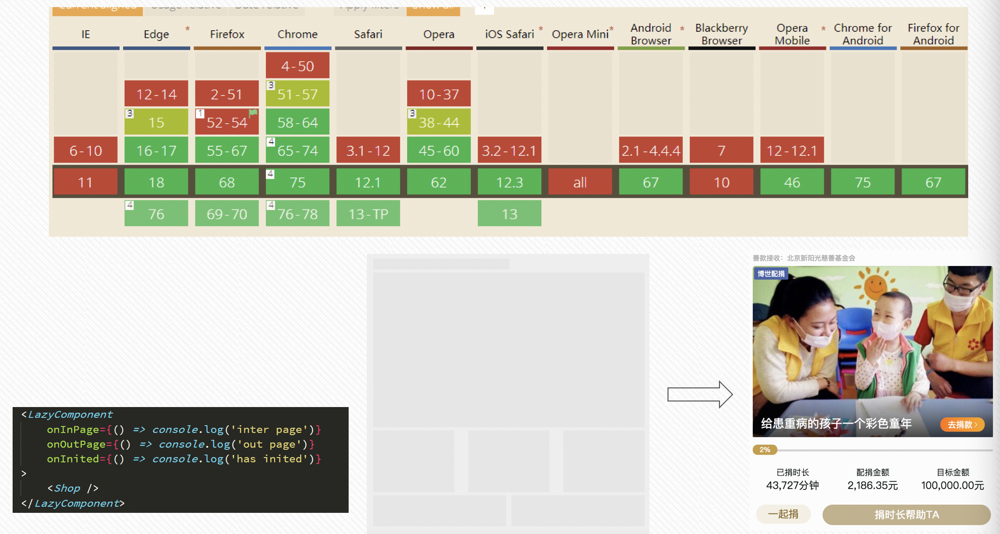

原文连接:https://www.cnblogs.com/xumengxuan/p/11718006.html
我们的业务在展开的过程中，前端渲染的模式主要经历了三个阶段：服务端渲染、前端渲染和目前的同构直出渲染方案。
服务端渲染的主要特点是前后端没有分离，前端写完页面样式和结构后，再将页面交给后端套数据，最后再一起联调。同时前端的发布也依赖于后端的同学；但是优点也很明显：页面渲染速度快，同时 SEO 效果好。
为了解决前后端没有分离的问题，后来就出现了前端渲染的这种模式，路由选择和页面渲染，全部放在前端进行。前后端通过接口进行交互，各端可以更加专注自己的业务，发布时也是独立发布。但缺点是页面渲染慢，严重依赖 js 文件的加载速度，当 js 文件加载失败或者 CDN 出现波动时，页面会直接挂掉。我们之前大部分的业务都是前端渲染的模式，有部分的用户反馈页面 loading 时间长，页面渲染速度慢，尤其是在老旧的 Android 机型上这个问题更加地明显。
node同构直出渲染方案可以避免服务端渲染和前端渲染存在的缺点，同时前后端都是用 js 写的，能够实现数据、组件、工具方法等能实现前后端的共享。
1. 效果
首先来看下统计数据的结果，可以看到从前端渲染模式切换到 node 同构直出渲染模式后，整页的加载耗时从 3500ms 降低到了 2100 毫秒左右，整体的加载速度提高了将近 40%。

但这个数据也不是最终的数据，因为当时要赶着上线的时间，很多东西还没来及优化，在后续的优化完成后，可以看到整体的的加载耗时又下降到了 1600ms 左右，再次下降了 500ms 左右。

从 3500ms 降低到 1600ms，整整加快了 1900ms 的加载速度，整体提升了 54%。优化的手段在稍后也会讲解到。
2. 遇到的挑战
在进行同构直出渲染方案，也对目前存在的技术，并结合自身的技术栈，对整体的架构进行梳理。

梳理出接下来存在的重点和难点：
- 如何保持数据、路由、状态、基础组件的同构共用？如何区分客户端和服务端？
- 如何进行数据请求，是否存在跨域的请求？在服务端、浏览器端和新闻客户端内都是怎样进行数据请求的，各自都有什么特点，是否可以封装一下？
- 工程化：如何区分开发环境、测试环境、预发布环境和正式环境？单元测试如何执行？是否可以自动化发布？
- 项目的页面有什么特点，页面、接口数据、组件等是否可以缓存？如何进行缓存？是否存在个性化的数据？
- 如何记录日志，上报项目的性能数据，如请求量、前端页面加载的整页耗时、错误率、后端耗时等数据？如何在 node 服务出现异常时（如负载过高、内存泄露）进行告警？
- 如何进行容灾处理，当出现异常情况时如何降级，并告知开发者快速的修复！
- node 是单线程运行，如何充分利用多核？
- 性能优化：预加载、图片懒加载、使用 service worker、延迟加载 js、IntersectionObserver 延迟加载组件等
针对我们项目初期的规划中，可能出现的问题一一进行解决，最终我们的项目也能够实现的差不离了，某些比较大的模块我可能需要单独拿出来写一篇文章进行总结。
3. 功能实现
3.1 前后端的同构
使用 node 服务端同构指出渲染方案，最主要的是数据等结构能够实现前后端的同构共享。
同构方面主要是实现：数据同构、状态同构、组件同构和路由同构等。
数据同构：对于相同的虚拟 DOM 元素，在服务端使用 renderToNodeStream 把渲染结果以“流“的形式塞给 response 对象，这样就不用等到 html 都渲染出来才能给浏览器端返回结果，“流”的作用就是有多少内容给多少内容，能够进一步改进了“第一次有意义的渲染时间”。同时，在浏览器端，使用 hydrate 把虚拟 dom 渲染为真实的 DOM 元素。若浏览器端对比服务端渲染的组件数，若发生不一致的情况时，不再直接丢掉全部的内容，而是进行局部的渲染。因此在使用服务端的渲染过程中，要保证前后端组件数据的一致性。这里将服务端请求的数据，插入到 js 的全局变量中，随着 html 一起渲染到浏览器端（脱水）；这是在浏览器端，就可以拿到脱水的数据来初始化组件，添加交互等等（注水）。
状态同构方面：我们这里使用mobx为每个用户创建一个全局的状态管理，这样数据可以进行统一的管理，而不用组件之间衣岑层传递。
组件同构：编写的基础组件或其他组件可以在服务端和客户端都能使用，同时使用typeof window==='undefined'或process.browser来判断当前是客户端还是服务端，以此来屏蔽某端不支持的操作。
路由统一：客户端使用BrowserRouter，服务端使用StaticRouter。
在同构的过程中，最开始时还没太理解这个概念，在编码阶段就遇到了这样的问题。例如我们有个小轮播，这个轮播是将数组打乱随机展示的，我将从服务端请求到的数据打乱后渲染到页面上，结果调试窗口中输出一条错误信息（我们这里用个样例数据来代替）：
const list = ['勋章', '答题卡', '达人榜', '红包', '公告'];在render()中随机输出：
{
list.sort(() => (Math.random() < 0.5 ? 1 : -1)).map(item => (
<p key={item}>{item}</p>
));
}结果在控制台输出了警告信息，同时最终展示出来的信息并不是打乱排序：
Warning: Text content did not match. Server: "红包" Client: "答题卡"
输出的警告信息是因为客户端发现当前与服务端的数据不一致后，客户端重新进行了渲染，并给出了警告信息。我们在渲染的时候才把数组打乱顺序，服务端是按照打乱顺序后的数据渲染的，但是传递给客户端的数据还是原始数据，造成了前后端数据不一致的问题。
如果真的想要随机排序，可以在获取服务端的数据后，直接先排好序，然后再渲染，这样服务端和客户端的数据就会保持一致。在 nextjs 中就是getInitialProps中操作。
3.2 如何进行数据请求
基于我们项目主要是在新闻客户端内运行的特点，我们要考虑多种数据请求的方式：服务端、浏览器端、新闻客户端内，是否跨域等特点，然后形成一个完整的统一的多终端数据请求体系。
- 服务端：使用 http 模块或者 axios 等第三方组件发起 http 请求，并透传 ua 和 cookie 给接口；
- 新闻客户端：使用新闻客户端提供的 jsapi 发起接口请求，注意 iOS 和 Android 不同 APP 中请求方式的差异；
- 浏览器端跨域请求：创建一个 script 标签发起接口请求，并设置超时时间；
- 浏览器端同域请求：优先使用
fetch，然后使用XMLHttpRequest发起接口请求。
这里将多终端的数据进行封装，对外提供统一而稳定的调用方式，业务层无需关心当前的请求从哪个终端发起。
// 发起接口请求
// @params {string} url 请求的地址
// @params {object} opts 请求的参数
const request = (url: string, opts: any): Promise<any> => {};同时，我们也在请求接口的方法中添加上监控处理，如监控接口的请求量、耗时、失败率等信息，做到详细的信息记录，快速地进行定位和相应。
3.3 工程化
工程化是一个很大的概念，我们这里仅仅从几个小点上进行说明。
我们的项目目前都是部署在 skte 上，通过设置不同的环境变量来区分当前是测试环境、预发布环境和正式环境。
同时，因为我们的业务主要是在新闻客户端内访问的特点，很多的单元测试无法完全覆盖，只能进行部分的单元测试，确保基础功能的正常运作。

现在接入了完全自动化的 CI(持续集成)/CD(持续部署)，基于 git 分支的方式进行发布构建，当开发者完成编码工作后，推送到 test/pre/master 分支后，进行单元测试的校验，通过后就会自动集成和部署。
3.4 缓存
缓存的优点自不必多说：
- 加快了浏览器加载网页的速度；
- 减少了冗余的数据传输，节省网络流量和带宽；
- 减少服务器的负担，大大提高了网站的性能。
但同时增加缓存，整体项目的复杂度也会增加，我们需要评估下项目是否适合缓存、适用于哪种缓存机制、缓存失效时如何处理。
缓存的机制主要有：
- 浏览器强缓存或 nginx 缓存：缓存固定的时长，例如 30ms 的时间，在这 30ms 的时间内读取缓存中的数据，这种缓存的缺点是数据无法及时更新，必须等到缓存时间到后才能更新；
- 状态缓存或全局缓存：这适用于路由之间多次切换或者缓存用户个性化的数据，只在单次访问的过程中有效；
- 内存缓存：将缓存存储于内存中，无需额外的 I/O 开销，读写速度快；但缺点是数据容易失效，一旦程序出现异常时缓存直接丢失，同时内存缓存无法达到进程之间的共享。这里当我们使用浏览器的协商缓存时，即根据生成的内容产生
ETag值，若 etag 值相同则使用缓存，否则请求服务器的数据，这就会造成不同进程之间缓存的数据可能不一样，etag 多次失效的问题。内存缓存尤其要注意内存泄露的问题 - 分布式缓存：使用独立的第三方缓存，如 Redis 或 Memcached，好处时多个进程之间可以共享，同时减少项目本身对缓存淘汰算法的处理
不同的项目或者不同的页面采用不同的缓存策略。
- 不常更新数据的页面如首页、排行榜页面等，可以使用浏览器强缓存或者接口缓存；
- 用户头像、昵称、个性化等数据使用状态管理；
- 接口数据可以使用第三方缓存
在对接口的数据缓存时，尤其要注意的是接口正常返回时，才缓存数据，否则交给业务层处理。
同时，在使用缓存的过程中，还注意缓存失效的问题。
| 缓存失效 | 含义 | 解决方案 |
|---|---|---|
| 缓存雪崩 | 所有的缓存同一时间失效 | 设置随机的缓存时间 |
| 缓存穿透 | 缓存中不存在，数据库中也不存在 | 缓存中设置一个空值，且缓存时间较短 |
| 随机 key 请求 | 恶意地使用随机 key 请求，导致无法命中缓存 | 布隆过滤器，未在过滤器中的数据直接拦截 |
| 为缓存的 key | 缓存中没有但数据库中有 | 请求成功后，缓存数据，并将数据返回 |
3.5 日志记录
详细的日志记录能够让我们很方便地了解项目效果和排查问题。前后端的表现形式不一样，我们也区分前后端进行日志的上报。
前端主要上报页面的性能信息，服务端主要上报程序的异常、CPU 和内存的使用状况等。
在前端方面，我们可以使用window.performance经过简单的计算得到一些网页的性能数据：
- 首次加载耗时： domLoading - fetchStart；
- 整页耗时： loadEventEnd - fetchStart；
- 错误率： 错误日志量/请求量；
- DNS 耗时： domainLookupEnd - domainLookupStart；
- TCP 耗时： connectEnd - connectStart；
- 后端耗时： responseStart - requestStart；
- html 耗时： responseEnd - responseStart；
- DOM 耗时： domContentLoadedEventEnd - responseEnd；
同时我们也需要捕获前端代码中的一些报错：
- 全局捕获，error：
window.addEventListener(
'error',
(message, filename, lineNo, colNo, stackError) => {
console.log(message); // 错误信息的描述
console.log(filename); // 错误所在的文件
console.log(lineNo); // 错误所在的行号
console.log(colNo); // 错误所在的列号
console.log(stackError); // 错误的堆栈信息
}
);- 全局捕获，unhandledrejection：
当 Promise 被 reject 且没有 reject 处理器的时候，会触发 unhandledrejection 事件；这可能发生在 window 下，但也可能发生在 Worker 中。 这对于调试回退错误处理非常有用。
window.addEventListener('unhandledrejection', event => {
console.log(event);
});- 接口异步请求时
这里可以对fetch和XMLHttpRequest进行重新的封装，既不影响正常的业务逻辑，也可以进行错误上报。
XMLHttpRequest 的封装：
const xmlhttp = window.XMLHttpRequest;
const _oldSend = xmlhttp.prototype.send;
xmlhttp.prototype.send = function() {
if (this['addEventListener']) {
this['addEventListener']('error', _handleEvent);
this['addEventListener']('load', _handleEvent);
this['addEventListener']('abort', _handleEvent);
} else {
var _oldStateChange = this['onreadystatechange'];
this['onreadystatechange'] = function(event) {
if (this.readyState === 4) {
_handleEvent(event);
}
_oldStateChange && _oldStateChange.apply(this, arguments);
};
}
return _oldSend.apply(this, arguments);
};fetch 的封装：
const oldFetch = window.fetch;
window.fetch = function() {
return _oldFetch
.apply(this, arguments)
.then(res => {
if (!res.ok) {
// True if status is HTTP 2xx
// 上报错误
}
return res;
})
.catch(error => {
// 上报错误
throw error;
});
};服务端的日志根据严重程度，主要可以分为以下的几个类别：
- error: 错误，未预料到的问题；
- warning: 警告，出现了在预期内的异常，但是项目可以正常运行，整体可控；
- info: 常规，正常的信息记录；
- silly: 不明原因造成的；
我们针对可能出现的异常程度进行不同类别（level）的上报，这里我们采用了两种记录策略，分别使用网络日志boss和本地日志winston分别进行记录。boss 日志里记录较为简单的信息，方便通过浏览器进行快速地排查；winston 记录详细的本地日志，当通过简单的日志信息无法定位时，则使用更为详细的本地日志进行排查。
使用winston进行服务端日志的上报，按照日期进行分类，上报的主要信息有：当前时间、服务器、进程 ID、消息、堆栈追踪等：
// https://github.com/winstonjs/winston
logger = createLogger({
level: 'info',
format: combine(label({ label: 'right meow!' }), timestamp(), myFormat), // winston.format.json(),
defaultMeta: { service: 'user-service' },
transports: [
new transports.File({
filename: `/data/log/question/answer.error.${date.getFullYear()}-${date.getMonth() +
1}-${date.getDate()}.log`,
level: 'error'
})
]
});同时 nodejs 服务本身的监控机制也充分利用上，例如包括 http 状态码，内存占用（process.memoryUsage）等。
在日志的统计过程中，加入告警机制，当告警数量或者数值超过一定的范围，则向开发者的微信和邮箱发出告警信息和设备。例如其中的一条告警规则是：当页面的加载时间小于 10ms 或者超过 6000ms 则发出告警信息，小于 10ms 时说明页面挂掉了，大于 6000ms 说明服务器可能出现异常，导致资源加载时间过长。
同时也要及时地关注用户反馈平台，若产生了一个用户的反馈，必然是有更多的用户存在这样的问题。
3.6 容灾处理
日志记录和告警等都是事故发生后才产生的行为，我们应当如何保证在我们看到日志信息并修复问题之前的这段时间里，服务至少能够还是是正常运行的，而不是白屏或者 5xx 等信息。这里我们要做的就是线上服务的容灾处理。
| 可能存在的问题 | 容灾措施 |
|---|---|
| 后端接口异常 | 使用默认数据，并及时告知接口方 |
| 瞬时流量高、CPU 负载率过高 | 自动扩容，并告警 |
| node 服务异常，如 4xx，5xx 等 | nginx 自动将服务转向静态页面，并告警转发的次数 |
| 静态资源导致的样式异常 | 将首屏或者首页的样式嵌入到页面中 |
容灾处理与日志信息的记录，保障我们项目能够正常地在线上运行。
3.7 cluster 模块
nodejs 作为一种单线程、单进程运行的程序，如果只是简单的使用的话（node app.js），存在着如下一些问题：
- 无法充分利用多核 cpu 机器的性能，
- 服务不稳定，一个未处理的异常都会导致整个程序退出
- 没有成熟的日志管理方案、
- 没有服务/进程监控机制
所幸，nodejs 为我们提供了cluster模块，什么是cluster：
简单的说，
- 在服务器上同时启动多个进程。
- 每个进程里都跑的是同一份源代码（好比把以前一个进程的工作分给多个进程去做）。
- 更神奇的是，这些进程可以同时监听一个端口（Cluster 实现原理）。
其中：
- 负责启动其他进程的叫做 Master 进程，他好比是个『包工头』，不做具体的工作，只负责启动其他进程。
- 其他被启动的叫 Worker 进程，顾名思义就是干活的『工人』。它们接收请求，对外提供服务。
- Worker 进程的数量一般根据服务器的 CPU 核数来定，这样就可以完美利用多核资源。
cluster 模块可以创建共享服务器端口的子进程。这里举一个著名的官方案例：
const cluster = require('cluster');
const http = require('http');
const os = require('os');
if (cluster.isMaster) {
// 当前为主进程
console.log(`主进程 ${process.pid} 正在运行`);
// 启动子进程
for (let i = 0, len = os.cpus().length; i < len; i++) {
cluster.fork();
}
cluster.on('exit', worker => {
console.log(`子进程 ${worker.process.pid} 已退出`);
});
} else {
http.createServer((req, res) => {
res.writeHead(200);
res.end('hello world\n');
}).listen(8000);
console.log(`子进程 ${process.pid} 已启动`);
}当有进程退出时，则会触发exit事件，例如我们 kill 掉 69030 的进程时：
> kill -9 69030
子进程 69030 已退出我们尝试 kill 掉某个进程，发现子进程是不会自动重新创建的，这里我可以修改下exit事件，当触发这个事件后重新创建一个子进程：
cluster.on('exit', worker => {
console.log(`子进程 ${worker.process.pid} 已退出`);
// log日志记录
cluster.fork();
});主进程与子进程之间的通信：每个进程之间是相互独立的，可是每个进程都可以与主进程进行通信。这样就能把很多需要每个子进程都需要处理的问题，放到主进程里处理，例如日志记录、缓存等。我们在 3.4 缓存小节中也有讲“内存缓存无法达到进程之间的共享”，可是我们可以把缓存提高到主进程中进行缓存。
if (cluster.isMaster) {
Object.values(cluster.workers).forEach(worker => {
// 向所有的进程都发布一条消息
worker.send({ timestamp: Date.now() });
// 接收当前worker发送的消息
worker.on('message', msg => {
console.log(
`主进程接收到 ${worker.process.pid} 的消息：` +
JSON.stringify(msg)
);
});
});
} else {
process.on('message', msg => {
console.log(`子进程 ${process.pid} 获取信息：${JSON.stringify(msg)}`);
process.send({
timestamp: msg.timestamp,
random: Math.random()
});
});
}不过若线上生产环境使用的话，我们需要给这套代码添加很多的逻辑。这里可以使用pm2来维护我们的 node 项目，同时 pm2 也能启用 cluster 模式。
pm2 的官网是http://pm2.keymetrics.io，github 是https://github.com/Unitech/pm2。主要特点有：
- 原生的集群化支持（使用 Node cluster 集群模块）
- 记录应用重启的次数和时间
- 后台 daemon 模式运行
- 0 秒停机重载，非常适合程序升级
- 停止不稳定的进程（避免无限循环）
- 控制台监控
- 实时集中 log 处理
- 强健的 API，包含远程控制和实时的接口 API ( Nodejs 模块,允许和 PM2 进程管理器交互 )
- 退出时自动杀死进程
- 内置支持开机启动(支持众多 linux 发行版和 macos）
nodejs 服务的工作都可以托管给 pm2 处理。
pm2 以当前最大的 CPU 数量启动 cluster 模式：
pm2 start server.js -i max不过我们的项目使用配置文件来启动的，ecosystem.config.js：
module.exports = {
apps: [
{
name: 'question',
script: 'server.js',
instances: 'max',
exec_mode: 'cluster',
autorestart: true,
watch: false,
max_memory_restart: '1G',
env_test: {
NEXT_APP_ENV: 'testing'
},
env_pre: {
NEXT_APP_ENV: 'pre'
},
env: {
NEXT_APP_ENV: 'production'
}
}
]
};然后启动即可：
pm2 start ecosystem.config.js关于使用 node 来编写 cluster 模式，还是用 pm2 来启动 cluster 模式，还是要看项目的需要。使用 node 编写时，自己可以控制各个进程之间的通信，让每个进程做自己的事情；而 pm2 来启动的话，在整体健壮性上更好一些。
3.8 性能优化
我们应当首先保证首页和首屏的加载，一个是首屏需要的样式直接嵌入到页面中加载，再一个是首屏和次屏的数据分开加载。我们在首页的数据主要是瀑布流的方式加载，而瀑布流是需要 js 计算的，因此这里我们先加载几条数据，保证首屏是有数据的，然后接下来的数据使用 js 计算应当放在哪个位置。
再一个是使用 service worker 来本地缓存 css 和 js 资源，更具体的使用，可以访问service worker 在新闻红包活动中的应用。
这里我们使用 IntersectionObserver 封装了通用的组件懒加载方案，因为在使用 scroll 事件中，我们可能还需要手动节流和防抖动，同时，因为图片加载的快慢，导致需要多次获取元素的 offsetTop 值。而 IntersectionObserver 就能完美地避免这些问题，同时，我们也能看到，这一属性在高版本浏览器中也得到了支持，在低版本浏览器中，我可以使用 polyfill 的方式进行兼容处理处理；

我将这个功能封装为一个组件，对外提供几个监听方法，将需要懒加载的组件或者资源作为子组件，进行包裹，同时，我们这里也建议建议使用者，使用默认的骨架屏撑起元素未渲染时的页面。因为在直接使用懒加载渲染时，假如不使用骨架屏的话，用户是先看到白屏，然后突然渲染内容，页面给用户一种强烈抖动的感觉。真实组件在最后真正展示出来时，需要一定的时间和空间，时间是从资源加载到渲染完毕需要时间；而空间指的是页面布局中需要给真实组件留出一定的问题，一个是为了避免页面，再一个使用骨架屏后：
- 提升用户的感知体验
- 保证切换的一致性
- 提供可见性观察的目标对象，为执行懒加载的组件保证可见性的区域
这里实现的通用懒加载组件，对外提供了几个回调方法：onInPage, onOutPage, onInited 等。
这个通用的组件懒加载方案可以使用在如下的场景下：
- 懒加载的粒度可大可小，大到 1 个组件或者几个组件，小到一个图片即可；
- 页面模块曝光率的数据上报，这样可以计算模块从曝光到参与的一个漏斗数据；
- 长列表中的无限滚动：我们可以监听页面底部的一个透明元素，当这个透明元素即将可见时，加载并渲染下一页的数据。
当然，长列表无限滚动的优先，不仅限于使用可见性代替滚动事件，也还有其他的优化手段。
4. 总结
虽然啰里啰嗦了一大堆，但也这是我们同构直出渲染方案的开始，我们还有很长的路要走。应用型技术的难点不是在克服技术问题，而是在于能够不断的结合自身的产品体验，发现其中存在的体验问题，不断使用更好的技术方案去优化用户的体验，为整个产品发展添砖加瓦。
蚊子的前端博客链接： https://www.xiabingbao.com 。
欢迎关注我的微信公众号： wenzichel